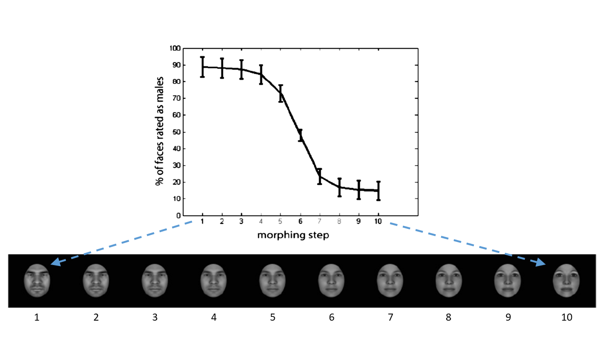
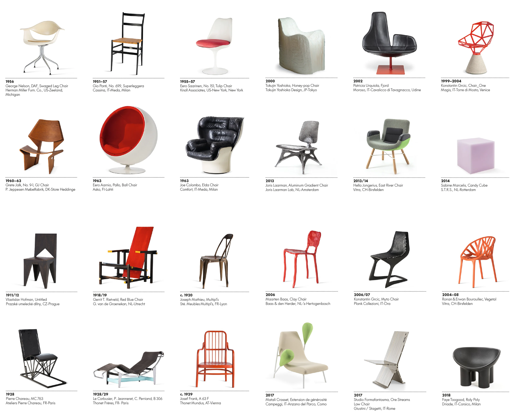
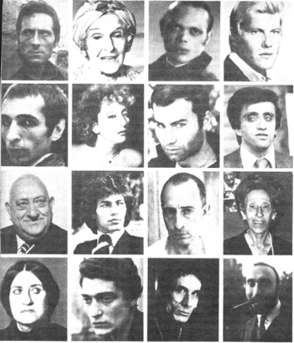

Warning
Page en cours de construction
Conclusion#
La perception catégorielle est un phénomène très général, qui peut être observé non seulement dans la perception des phonèmes mais également sur certaines tâches non linguistiques, et dans d’autres modalités comme la vision. La figure suivante illustre ainsi une expérience de perception des visages masculins et féminins. Le long d’un continuum synthétique de visages allant d’un visage clairement masculin à un visage clairement féminin, la perception du genre mesurée par une tâche de catégorisation (ce visage est-il masculin ou féminin ?) présente une discontinuité marquée. Ainsi les visages sont presque tous perçus de façon non ambiguë comme masculins ou comme féminins, et la perception bascule de “100% masculin” à “100% féminin” en l’espace de quelques stimuli seulement.


Fig. 113 Exemple de phénomène de perception catégorielle dans la perception des visages masculins et féminins. En bas, continuum synthétique de visages obtenu par morphing entre un visage masculin (à gauche) et un visage féminin (à droite). En haut : pourcentage de jugements du visage comme étant masculin, le long du continuum. Figure adaptée de Todorova et al. (2020)#
Les catégorisations spontanées surviennent en permanence dans notre cerveau et dépendent non seulement de notre langue, mais aussi de notre culture. Une catégorie réunit utilement un ensemble d’éléments. Elle rend disponibles des propriétés qui ne sont pas immédiatement perceptibles. Sans perception catégorielle, pas de langage ni de pensée organisée.
Les catégorisations spontanées effectuées par et dans nos cerveaux surviennent en permanence et dépendent non seulement de notre langue, mais aussi de notre époque, de notre culture et de notre état d’âme. Elles s’écartent considérablement du stéréotype de ce qu’est la catégorisation. En effet, la vision intuitive de ce mécanisme psychologique est qu’il consiste à ranger des entités de l’environnement dans des catégories mentales […]
Une catégorie réunit un ensemble d’éléments avec profit pour l’être qui la possède. Elle rend disponibles des propriétés qui ne sont pas immédiatement perceptibles. […]
Cela les a conduits à des théories de la catégorisation qui récusent le rôle des définitions précises et font plutôt appel à la proximité soit avec des prototypes, entités mentales génériques stockées en mémoire et qui résument de façon concise toutes les expériences antérieures qu’une personne a eues avec la catégorie en question, soit avec l’ensemble de tous les exemplaires de la catégorie qui ont déjà été rencontrés […]
l’origine de ces efforts se trouve l’idée novatrice de catégories non homogènes, dotées de degrés forts ou faibles d’appartenance, ce qui revient à distinguer entre membres plus centraux et moins centraux d’une catégorie. […]
La diversité des niveaux d’abstraction auxquels il peut être approprié de catégoriser est due à la fois à l’importance que prennent le fait de distinguer et celui de regrouper. Durant le repas, on distingue son assiette et celle du voisin, puis elles sont confondues dans le buffet. Un réfrigérateur et un piano ont des usages bien différents, mais pour des déménageurs, il s’agira avant tout de meubles encombrants.[…]
priorité lorsque l’on aborde n’importe quel domaine inconnu est de se familiariser avec les entités qui font partie du domaine et de savoir les différencier, parce que pour connaître il faut reconnaître. En ce sens, catégoriser, c’est distinguer. […]
une personne demande à une autre quelque chose d’aussi anodin que : « Tes frites sont bonnes ? », son interlocuteur devrait en toute rigueur lui répondre : « Les six que j’ai mangées jusqu’à présent étaient vraiment excellentes, mais du fait que je n’ai pas goûté les autres dans mon assiette, je ne suis pas en mesure de dire quoi que ce soit avec certitude.
Les catégories sont des boîtes ; catégoriser, c’est mettre dans une boîte. C’est à cette analogie naïve qu’est due la croyance quasiment irrépressible évoquée au chapitre 4 selon laquelle les objets (et les situations) qui nous entourent auraient tous une catégorie privilégiée d’appartenance qui constituerait leur identité intrinsèque. […] En effet, il se trouve que l’approche de la catégorisation qui était partagée par la quasi-totalité des psychologues expérimentalistes jusque dans le milieu des années 1970, lorsque la psychologue Eleanor Rosch a publié des travaux rendant intenable cette position, était très similaire à cette analogie naïve. Transposition « logico-mathématique » de la vision naïve, elle considérait l’appartenance catégorielle comme déterminée par un ensemble de propriétés précises, nécessaires et suffisantes : on fait partie de la catégorie (on est dans la boîte) si et seulement si on a les propriétés requises ; sinon on est en dehors de la boîte.
(Hofstadter, l’Analogie)
Sans cette capacité d’abstraction nos vies ressembleraient à celle d’Irénée Funes, personnage d’une nouvelle de Jorge Luis Borges, pour qui une chute de cheval eut la conséquence funeste qu’il « se rappelait chaque feuille de chaque arbre de chaque bois, mais […] était presque incapable d’idées générales platoniciennes. Non seulement il lui était difficile de comprendre que le symbole générique chien embrassât tant d’individus dissemblables et de formes diverses ; cela le gênait que le chien de trois heures quatorze (vu de profil) eût le même nom que le chien de trois heures un quart (vu de face) ». À l’inverse de Funes, l’être humain a naturellement la faculté d’abstraire pour faire face à la diversité du monde (Hofstadter, l’Analogie)
Nos catégories sont de grandes simplifications des structures de l’univers mais, bien choisies, elles sont extraordinairement efficaces pour nous permettre de sonder et prévoir ce qui se passe autour de nous. (boucle étrange)
“Our sensory experience is informationally rich and profuse in a way that our cognitive utilization of it is not.” (Dretske, 1981b, p.146).


Fig. 114 .#


Fig. 115 .#